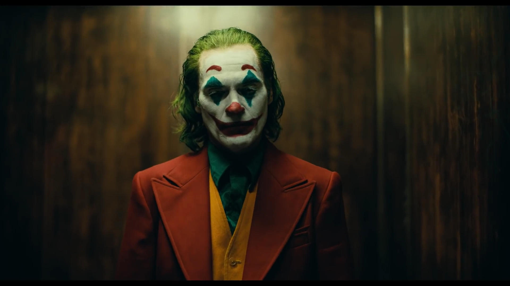

Andrez's Top 5 Movies!
Joker


When this movie came out I didn't know what to expect since there was no Batman involved and really you need both characters in the same movie in order to make a good story but not this one. This movie was just a full suspenseful mission making the fans think what Joker is going to next or the ending making it seem if it was all just his imagination. What happen he really became the figure to all the low income people who want the rich people to be punished for never helping out in their community always just taking. Joker started a riot after he shot a man on national tv because of how he described Joker being which is a misunderstanding because he just wants everyone to see he making a difference in the city.